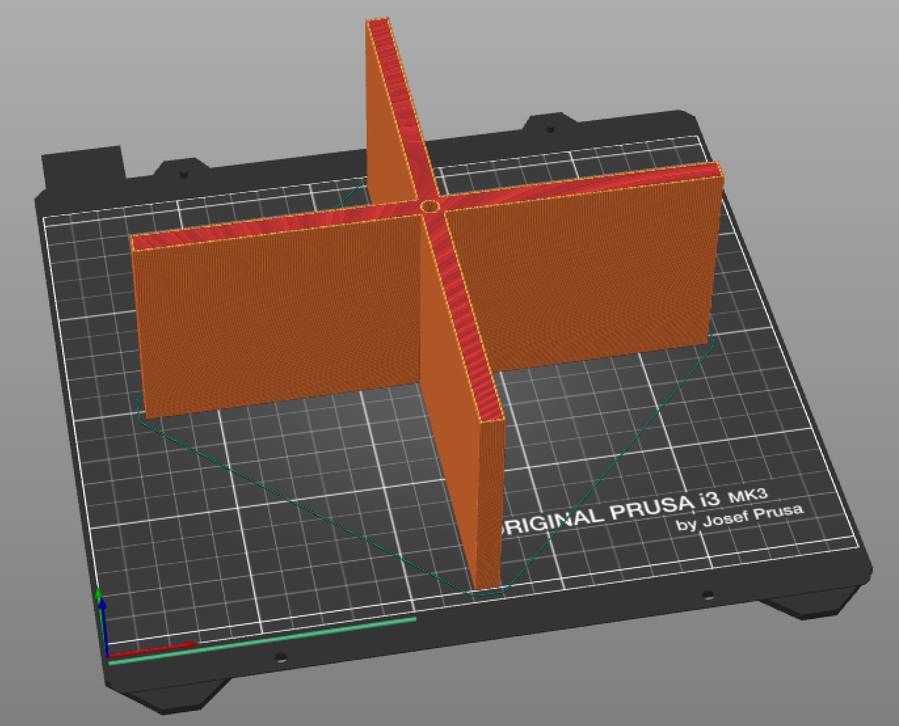
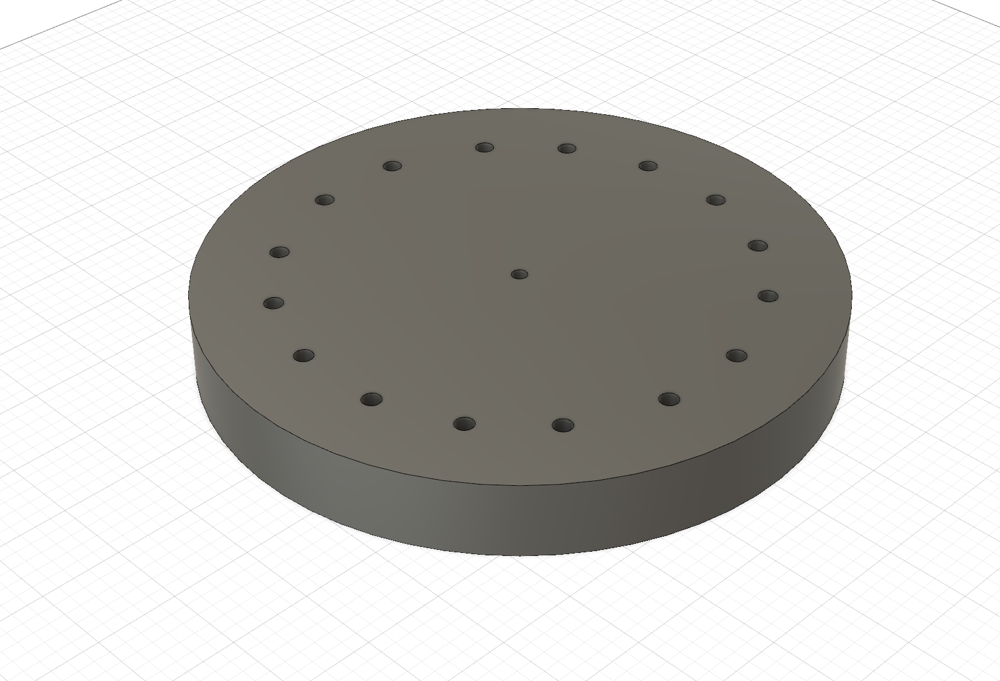
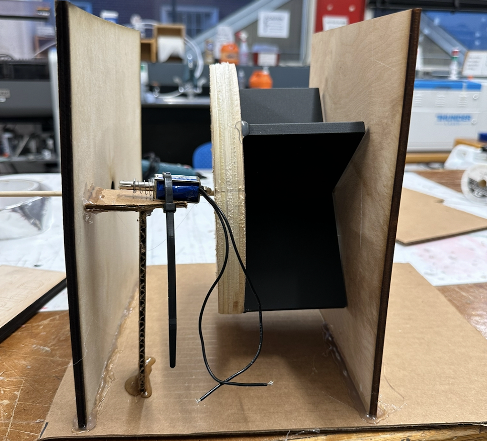
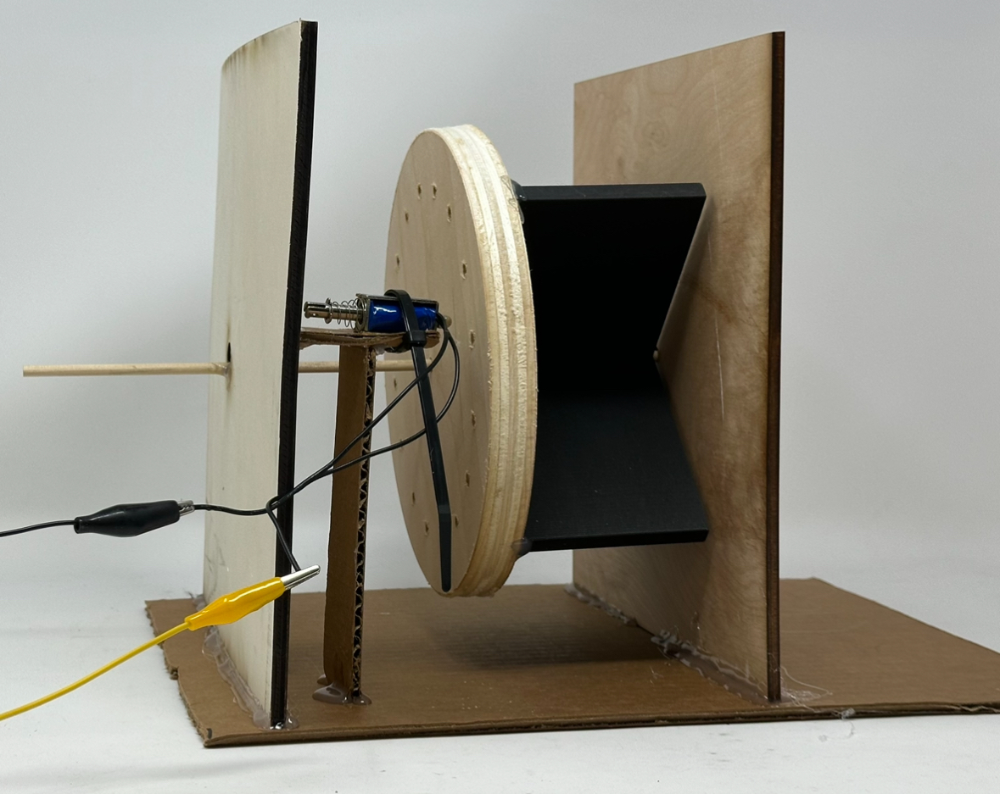
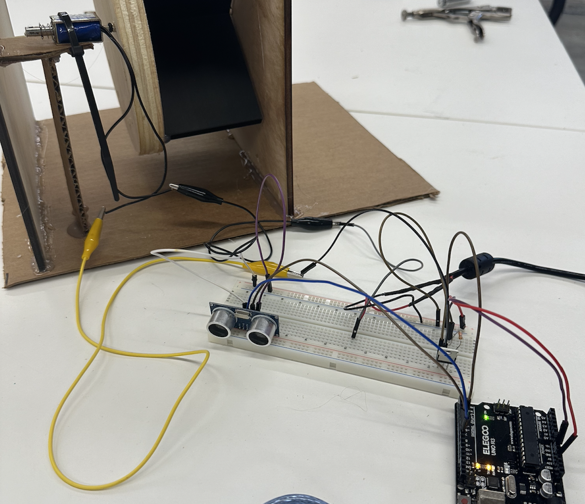
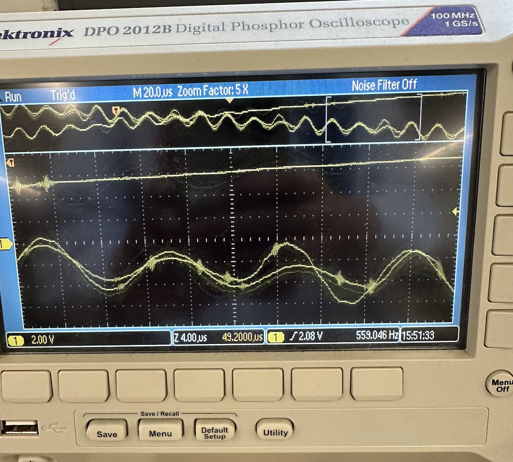

Week 7: Electronic Output Devices
This week the assignment was to make a serious attempt at the most challenging/intimidating aspect of my final project. The assignment requires at least one input and one output device and to write a microcontroller program that integrates at least one input device and one output device. We also need to use an oscilloscope to investigate the output device.
The MVP of the Pothole Probe
The Pothole Probe is a device that uses sensors to detect potholes on roads and dispenses gravel to effectively fill that pothole. The device wouldn't be able to function without a reliable gravel dispenser once the pothole has been sensed. Therefore, the MVP of the probe involves three key items:
- Ultrasonic sensor to detect depth/distance (pothole detector)
- Gravity-dependent rotary valve dispenser
- Solenoid stopper
Altogether these three elements create the mechanism needed to detect, dispense gravel as well as stop the valve once the pothole has been filled. Thus, this Minimal Viable Product fulfills the purpose of The Pothole Probe.

List of materials and resources used:
- Prusa 3D printer
- Wooden dowels
- CNC ShopBot Mill
- Laser cutter
- Autodesk Fusion 360 software for modelling
Steps for making the MVP:
-
3D Printing the Rotary Valve

- I used my final project model here to create necessary the necessary 3D file.
- I decided to print this part of the rotary valve because of the X shape, so I wouldn't have to use wood and glue to create it.
-
CNC Milling the Base

- I used my final project model here as well to create the necessary dxf file for the CNC mill.
- The holes at the back will be used to stop the valve by the solenoid. I used the CNC here because I needed these holes to be in precise positions which would be difficult to achieve using a drill. A laser cutter would also be difficult to use here due to their specific depth.
-
Assembly

- After having the rotary valve complete I attached them using a wooden dowel and a bit of hot glue for stability purposes.
- I laser cut two side walls that hold the valve above ground so that it has full range of motion. I hot glued these walls to a cardboard base. This area of the design is definitely not as stable and likely to change in future iterations. I imagine a box to replace this in the future that the bucket of gravel can sit on.
- I also made a table attached to the left side wall for solenoid to sit on. This is also likely to be replaced by a cleaner and more sturdy design.
-
Final MVP Design Look

-
Ultrasonic Sensor and Solenoid Programming

- I used class structure arduino programming to program the solenoid to retract once the ultrasonic sensor detects a certain distance.
- This simulates detecting a pothole and releasing the valve to dispense the gravel.
Arduino Code for MVPconst int echoPin = 7; const int trigPin = 8; const int solPin = 5; class UltrasonicSensor { private: int echoPin; int trigPin; long previousMillis; long interval; public: UltrasonicSensor(int echo, int trig, long interval) { echoPin = echo; trigPin = trig; this->interval = interval; pinMode(echoPin, INPUT); pinMode(trigPin, OUTPUT); } void measureDistance() { digitalWrite(trigPin, LOW); delayMicroseconds(2); digitalWrite(trigPin, HIGH); delayMicroseconds(10); digitalWrite(trigPin, LOW); long duration = pulseIn(echoPin, HIGH); long distance = duration / 58.2; Serial.println(distance); if (distance >= 20) { digitalWrite(solPin, HIGH); } else { digitalWrite(solPin, LOW); } } bool isTimeToUpdate() { long currentMillis = millis(); if (currentMillis - previousMillis >= interval) { previousMillis = currentMillis; return true; } return false; } }; class Sol { private: int pin; public: Sol(int pin) { this->pin = pin; pinMode(pin, OUTPUT); } void turnOn() { digitalWrite(pin, LOW); } void turnOff() { digitalWrite(pin, HIGH); } }; UltrasonicSensor sensor(echoPin, trigPin, 500); Sol Sol(solPin); void setup() { Serial.begin(9600); } void loop() { if (sensor.isTimeToUpdate()) { sensor.measureDistance(); } } -
Oscilloscope Findings

- The oscilloscope findings were interesting. When deactivated the solenoid created waves that crossed in an X-like shape. The waves look similar to sine waves, but weren't uniform as you can see from the image in the center. The frequency readings ranged from 300-600Hz as seen from the image on the left.
- When activated the solenoid waves are longer and have two peaks. The frequency also increased to ~4.8 kHz from ~500Hz. This shows the dramatic increase in speed when the solenoid is activated. This can be seen from the image on the right.
Fin.